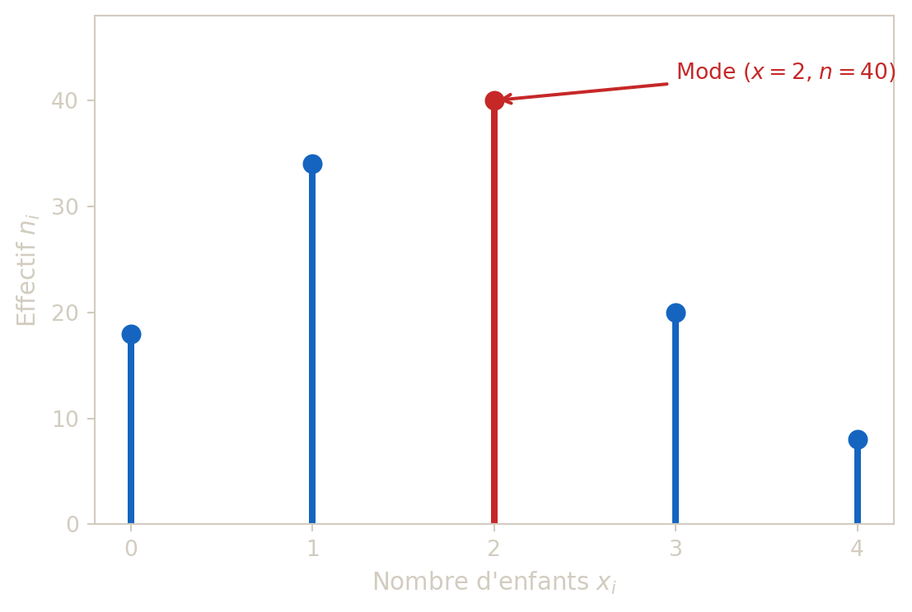
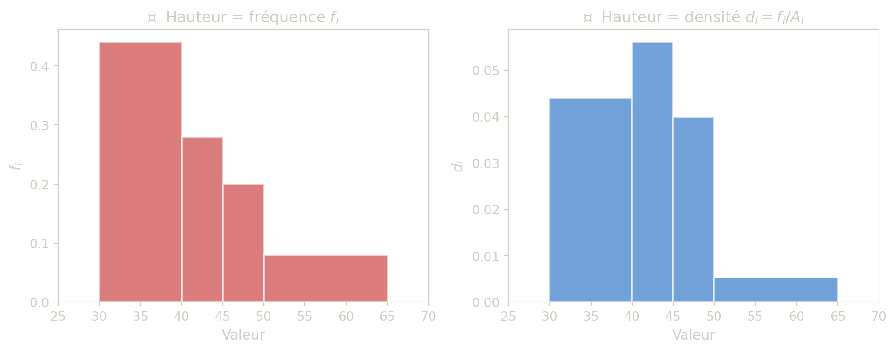
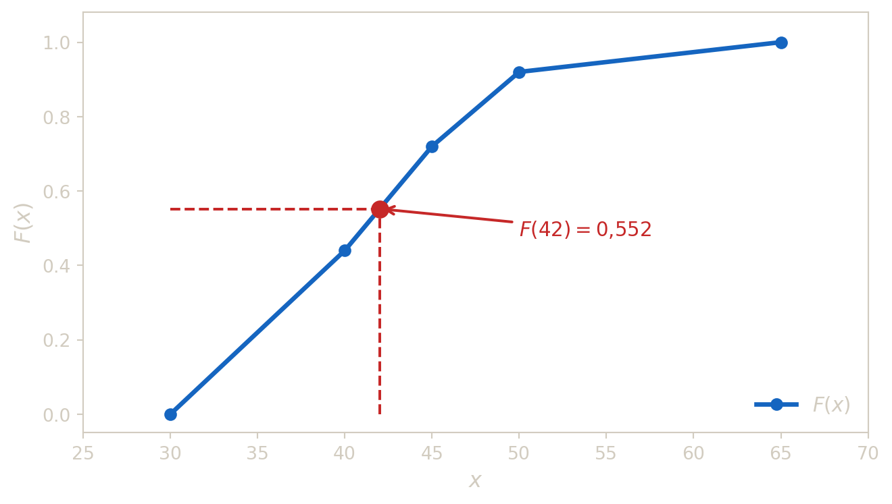
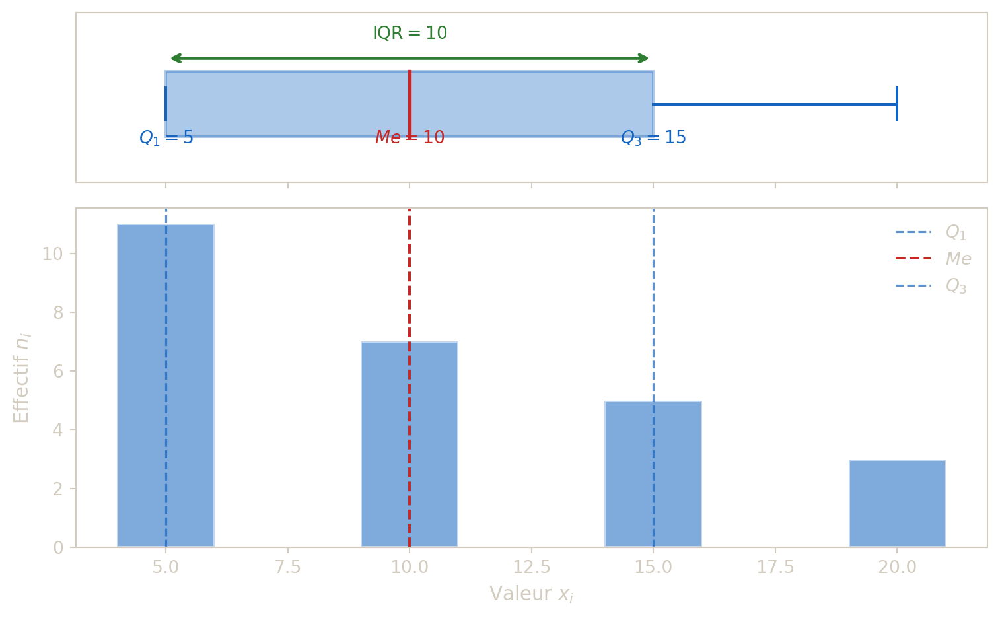
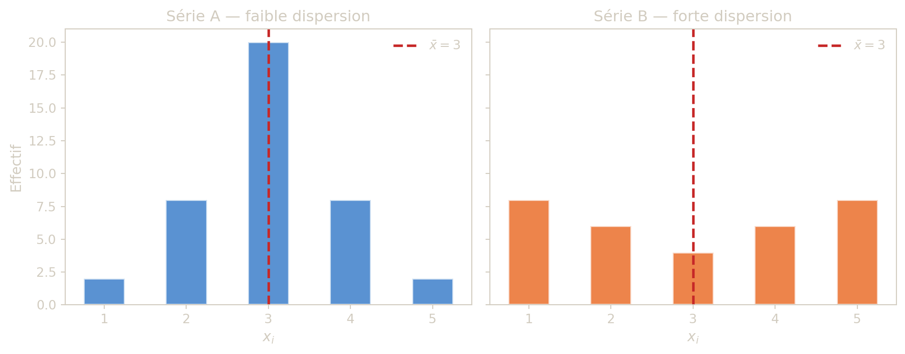
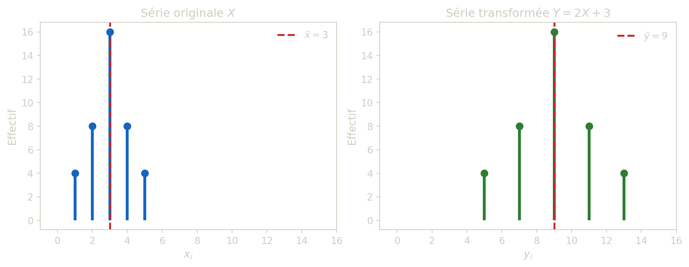

flowchart LR N["Notations"] --> U["Univariée"] --> P["Probabilités"] --> D["Densité"] --> NL["Normale"] --> B["Bivariée"] --> J["Couples"] --> C["Convergence"] --> S["Échantillonnage"] --> E["Estimation"] classDef default fill:#1C2E22,color:#D2CCC0,stroke:#2F4636,stroke-width:1px classDef active fill:#5BDB6D,color:#0D1610,stroke:#5BDB6D,stroke-width:2px class U active click N "notation.html" click U "univariate.html" click P "probability.html" click D "density-function.html" click NL "normal-distribution.html" click B "bivariate.html" click J "joint-continuous-random-variables.html" click C "convergence-random-variables.html" click S "sampling-distribution.html" click E "point-estimation.html"
Statistiques descriptives à une variable
Résumé
Ce chapitre presente les bases de la statistique descriptive univariée, avec l’objectif de décrire rigoureusement une population à partir d’un seul caractère. On introduit d’abord le vocabulaire (population, individu, variable, modalité), puis les outils de synthèse pour les séries discrètes (effectifs, fréquences, cumuls, mode). Le chapitre traite ensuite le cas des séries continues regroupées en classes, en expliquant l’usage correct de l’histogramme (densités) et de la fonction de répartition. Les indicateurs de position et de dispersion sont ensuite developpés : médiane, quartiles, intervalle interquartile, moyenne, variance, écart-type, avec les formules pratiques (dont Konig-Huygens) et les transformations affines. Le chapitre se termine par une synthese methodologique complète pour mener une étude statistique de bout en bout.
Dans tout ce chapitre, on étudie une serie statistique à une variable observée sur une population finie.
Vocabulaire de base
Définitions
- La population \(P\) est l’ensemble des individus etudies.
- Les individus (ou unites statistiques) sont les elements de \(P\).
- Le caractere (ou variable) est une application \[x : P \to E,\] ou \(E\) est l’ensemble des modalites.
- Le couple \((P,x)\) est une serie statistique (ou distribution statistique).
Types de variables
- Qualitative : les modalites ne sont pas numeriques.
- nominale : sans ordre naturel,
- ordinale : avec ordre naturel.
- Quantitative : les modalites sont numeriques.
- discrete : ensemble de valeurs fini ou denombrable,
- continue : ensemble de valeurs de type intervalle.
Le schema ci-dessous resume cette classification :
flowchart TD
V["<b>Variable statistique</b>"]
V --> QUAL["<b>Qualitative</b><br><i>modalités non numériques</i>"]
V --> QUANT["<b>Quantitative</b><br><i>modalités numériques</i>"]
QUAL --> NOM["Nominale<br><small>pas d'ordre naturel</small><br><small>ex. : couleur, métier</small>"]
QUAL --> ORD["Ordinale<br><small>ordre naturel</small><br><small>ex. : mention, niveau</small>"]
QUANT --> DISC["Discrète<br><small>valeurs isolées</small><br><small>ex. : nb d'enfants</small>"]
QUANT --> CONT["Continue<br><small>valeurs dans un intervalle</small><br><small>ex. : taille, poids</small>"]
style V fill:#f5f5f5,stroke:#333,color:#333
style QUAL fill:#fff3e0,stroke:#e65100,color:#333
style QUANT fill:#e3f2fd,stroke:#1565c0,color:#333
style NOM fill:#fff3e0,stroke:#e65100,color:#333
style ORD fill:#fff3e0,stroke:#e65100,color:#333
style DISC fill:#e3f2fd,stroke:#1565c0,color:#333
style CONT fill:#e3f2fd,stroke:#1565c0,color:#333
Dans ce chapitre, on se concentre sur les variables quantitatives (discretes puis continues en classes).
Avant tout calcul, il est essentiel de bien identifier ces elements : la population fixe le perimetre de l’etude (sur qui porte-t-elle ?), le caractere precise ce que l’on mesure, et la nature du caractere (qualitative, discrete, continue) determine les outils de representation et de calcul que l’on pourra utiliser. Une erreur a ce stade fausse toute l’analyse qui suit.
Exemple 1 - Identifier la nature d’un caractere
Pour chaque situation, preciser la population, le caractere et le type du caractere.
- Metier des adultes d’un groupe de skieurs.
- Age des participants a un concours.
- Taille des etudiants d’un amphitheatre.
Solution - Exemple 1
- Metier : variable qualitative nominale.
- Age : variable quantitative discrete (si age en annees entieres) ou continue (si mesure exacte).
- Taille : variable quantitative continue.
Distribution discrete finie
Soit une variable quantitative discrete \(x\) prenant les valeurs distinctes \[x_1 < x_2 < \cdots < x_r.\] On note \(n\) l’effectif total, \(n_i\) l’effectif de \(x_i\), et \[f_i = \frac{n_i}{n}\] sa frequence.
L’effectif \(n_i\) compte simplement combien d’individus prennent la valeur \(x_i\). La frequence \(f_i\) exprime cette meme information en proportion du total : dire \(f_i = 0{,}3\) signifie que 30 % des individus presentent la modalite \(x_i\). Travailler en frequences permet de comparer des series de tailles differentes, car la somme des frequences vaut toujours 1.
Definitions - Cumuls et mode
- Effectif cumule croissant (E.C.C.) : \[N_i^+ = \sum_{k=1}^i n_k.\]
- Frequence cumulee croissante (F.C.C.) : \[F_i^+ = \sum_{k=1}^i f_k = \frac{N_i^+}{n}.\]
- Mode : toute modalite d’effectif maximal.
Les cumuls repondent a des questions du type « combien d’individus prennent une valeur inferieure ou egale a \(x_i\) ? ». L’E.C.C. \(N_i^+\) donne cette reponse en effectif, la F.C.C. \(F_i^+\) en proportion. Par exemple, si \(F_3^+ = 0{,}80\), cela signifie que 80 % de la population a une valeur inferieure ou egale a \(x_3\).
Quant au mode, c’est la valeur la plus frequemment observee. Il n’est pas forcement unique : une serie peut etre bimodale (deux modes) voire multimodale.
Le diagramme de reference pour une serie discrete est le diagramme en batons. Contrairement a un diagramme en barres (qui utilise des rectangles), le diagramme en batons represente chaque valeur par un simple trait vertical dont la hauteur est proportionnelle a l’effectif. On utilise des batons et non des barres car la variable est discrete : chaque valeur est un point isole sur l’axe des abscisses, il n’y a pas de continuite entre les modalites.
Exemple 2 - Tableau statistique complet
Une etude porte sur le nombre d’enfants par foyer. Les resultats observes sont :
| Valeur \(x_i\) | 0 | 1 | 2 | 3 | 4 | Total |
|---|---|---|---|---|---|---|
| Effectif \(n_i\) | 18 | 34 | 40 | 20 | 8 | 120 |
- Calculer les frequences \(f_i\).
- Calculer les E.C.C. et F.C.C.
- Determiner la frequence de foyers ayant au plus 2 enfants.
- Donner le (ou les) mode(s).
Solution - Exemple 2 (resultats)
- \(f_i = n_i/120\).
- E.C.C. : \(18, 52, 92, 112, 120\).
- F.C.C. : \(0{,}15, 0{,}433, 0{,}767, 0{,}933, 1\).
- Frequence de foyers avec au plus 2 enfants : \(F_2^+ = 92/120 \approx 0{,}767\).
- Mode : valeur 2 (effectif maximal 40).

Distribution continue en classes
Quand les donnees sont nombreuses et presque toutes distinctes, on regroupe les observations en classes \[[a_i, a_{i+1}[, \quad i=1,\dots,r.\]
En effet, si l’on mesurait par exemple la taille de 500 personnes au millimetre pres, on obtiendrait presque autant de valeurs distinctes que d’individus, et un diagramme en batons serait illisible. En regroupant les observations par intervalles (par exemple \([160, 165[\), \([165, 170[\), etc.), on obtient une vision synthetique de la distribution. Le choix du nombre de classes et de leurs bornes releve du jugement de l’analyste : trop peu de classes masquent les details, trop de classes dispersent l’information.
Definitions - Classes
Pour la classe \([a_i,a_{i+1}[\) :
- amplitude : \[A_i = a_{i+1}-a_i,\]
- centre : \[c_i = \frac{a_i+a_{i+1}}{2},\]
- effectif : \(n_i\), frequence : \(f_i = n_i/n\),
- densite de frequence : \[d_i = \frac{f_i}{A_i}.\]
Le centre d’une classe sert d’approximation pour representer toutes les observations de cette classe par une seule valeur : il sera utilise plus tard dans le calcul de la moyenne et de la variance. La densite de frequence \(d_i\), elle, permet de comparer equitablement des classes d’amplitudes differentes : une classe large peut contenir beaucoup d’individus simplement parce qu’elle couvre un grand intervalle, sans pour autant etre plus « dense ».
Histogramme
Dans un histogramme correct, la surface de chaque rectangle est proportionnelle a la frequence de classe. Donc la hauteur doit etre proportionnelle a la densite \(d_i\) (et non a \(f_i\) si les amplitudes sont differentes).
C’est un piege classique : si toutes les classes ont la meme amplitude, il n’y a pas de probleme, car hauteur proportionnelle a \(f_i\) et hauteur proportionnelle a \(d_i\) reviennent au meme (on divise par une constante). En revanche, des que les amplitudes different, utiliser \(f_i\) en ordonnee donne une representation trompeuse : une classe large paraitra visuellement dominante alors qu’elle est peut-etre moins dense qu’une classe etroite.
Point cle
Si les amplitudes sont differentes, comparer seulement les hauteurs des barres peut induire en erreur. La grandeur pertinente est la surface (hauteur x largeur).
Exemple 3 - Densites et hauteurs corrigees
On considere la distribution suivante :
| Classe | \([30,40[\) | \([40,45[\) | \([45,50[\) | \([50,65[\) | Total |
|---|---|---|---|---|---|
| Effectif \(n_i\) | 11 | 7 | 5 | 2 | 25 |
- Calculer les frequences \(f_i\).
- Calculer les amplitudes \(A_i\).
- Calculer les densites \(d_i = f_i/A_i\).
Solution - Exemple 3 (resultats)
- \(f_i = (0{,}44, 0{,}28, 0{,}20, 0{,}08)\).
- \(A_i = (10, 5, 5, 15)\).
- \(d_i = (0{,}044, 0{,}056, 0{,}040, 0{,}0053)\).
La deuxieme classe est plus dense que la premiere, bien qu’elle ait un effectif inferieur.
Font 'default' does not have a glyph for '\u274c' [U+274c], substituting with a dummy symbol.
Font 'default' does not have a glyph for '\u2705' [U+2705], substituting with a dummy symbol.
Font 'default' does not have a glyph for '\u274c' [U+274c], substituting with a dummy symbol.
Font 'default' does not have a glyph for '\u2705' [U+2705], substituting with a dummy symbol.
Font 'default' does not have a glyph for '\u274c' [U+274c], substituting with a dummy symbol.
Font 'default' does not have a glyph for '\u2705' [U+2705], substituting with a dummy symbol.
Fonction de repartition empirique en classes
La fonction de repartition \(F\) repond a la question : « quelle proportion d’individus a une valeur strictement inferieure a \(x\) ? ». C’est l’analogue continu de la F.C.C. vue dans le cas discret.
Sous l’hypothese d’equirepartition dans chaque classe, la fonction de repartition \(F\) est :
- croissante,
- continue,
- affine par morceaux,
- telle que \(F(a_i)\) vaut la frequence cumulee au bord \(a_i\).
L’hypothese d’equirepartition suppose que les observations sont reparties uniformement a l’interieur de chaque classe. C’est une approximation : on ne connait pas la repartition exacte au sein de la classe, donc on suppose la plus simple possible. Cette hypothese justifie l’interpolation lineaire ci-dessous.
Pour \(x\in[a_i,a_{i+1}[\), on obtient \(F(x)\) par interpolation lineaire : \[ F(x)=F(a_i)+\frac{F(a_{i+1})-F(a_i)}{a_{i+1}-a_i}(x-a_i). \]
Exemple 4 - Lecture de repartition
Avec la distribution de l’exemple 3, calculer \(F(42)\).
Solution - Exemple 4
- \(42\in[40,45[\).
- \(F(40)=0{,}44\) et \(F(45)=0{,}72\).
- Donc \[ F(42)=0{,}44+\frac{0{,}72-0{,}44}{5}(2)=0{,}552. \]

Mediane, quartiles et dispersion
Les indicateurs de position (moyenne, mediane) et de dispersion (ecart-type, IQR) permettent de resumer une serie par quelques nombres-cles. On commence ici par les indicateurs bases sur le rang : mediane et quartiles. Leur interet majeur est d’etre robustes, c’est-a-dire peu sensibles aux valeurs extremes.
Definitions
- La mediane est une valeur qui partage la population en deux moities (50 % / 50 %).
- Les quartiles \(Q_1, Q_2, Q_3\) partagent en quatre parts de 25 %.
- On a \(Q_2 =\) mediane.
- L’ecart interquartile vaut \[IQR = Q_3-Q_1,\] et mesure la dispersion centrale.
Concretement, la mediane est la valeur « du milieu » : la moitie des individus se situe en dessous, l’autre moitie au-dessus. Le premier quartile \(Q_1\) separe les 25 % les plus faibles du reste, et \(Q_3\) les 75 % les plus faibles. L’IQR mesure donc l’etendue des 50 % centraux de la distribution, en ignorant les extremes.
Mediane ou moyenne ?
La mediane est preferable lorsque la distribution est asymetrique ou contient des valeurs aberrantes. Par exemple, dans une serie de salaires, quelques tres hauts revenus tirent la moyenne vers le haut, mais n’affectent pas la mediane. En revanche, la moyenne utilise toute l’information numerique et se prete mieux aux calculs algebriques (transformations affines, decomposition de variance, etc.).
Pour les series continues en classes, on determine les quantiles par lecture de la fonction de repartition (interpolation lineaire).
Exemple 5 - Quantiles d’une serie discrete
Soit la serie :
| Valeur \(x_i\) | 5 | 10 | 15 | 20 | Total |
|---|---|---|---|---|---|
| Effectif \(n_i\) | 11 | 7 | 5 | 3 | 26 |
Determiner la mediane, \(Q_1\), \(Q_3\) et l’ecart interquartile.
Solution - Exemple 5 (resultats)
Rangs cumules : - valeur 5 : rangs 1 a 11, - valeur 10 : rangs 12 a 18, - valeur 15 : rangs 19 a 23, - valeur 20 : rangs 24 a 26.
Donc : - mediane (entre rangs 13 et 14) = 10, - \(Q_1\) (autour du rang 7) = 5, - \(Q_3\) (autour du rang 20) = 15, - \(IQR = 15-5=10\).

Moyenne, variance, ecart-type
Apres les indicateurs de rang (mediane, quartiles), on introduit les indicateurs bases sur les valeurs numeriques elles-memes. La moyenne, la variance et l’ecart-type forment le trio fondamental de la statistique descriptive : ils seront repris tout au long du cours, aussi bien en probabilites qu’en inference.
Soit une serie quantitative discrete :
| Valeur | \(x_1\) | \(x_2\) | … | \(x_r\) |
|---|---|---|---|---|
| Effectif | \(n_1\) | \(n_2\) | … | \(n_r\) |
| Frequence | \(f_1\) | \(f_2\) | … | \(f_r\) |
avec \(\sum n_i=n\) et \(\sum f_i=1\).
Definitions - Indicateurs numeriques
- Moyenne : \[\bar x = \frac{1}{n}\sum_{i=1}^r n_i x_i = \sum_{i=1}^r f_i x_i.\]
- Variance : \[\mathrm{Var}(x)=\frac{1}{n}\sum_{i=1}^r n_i(x_i-\bar x)^2.\]
- Ecart-type : \[\sigma(x)=\sqrt{\mathrm{Var}(x)}.\]
La moyenne \(\bar x\) est le « centre de gravite » de la serie : c’est la valeur autour de laquelle les observations se repartissent. Si l’on imaginait les effectifs comme des masses posees sur une regle, la moyenne serait le point d’equilibre.
La variance mesure a quel point les valeurs s’ecartent de cette moyenne. On calcule l’ecart de chaque observation a la moyenne \((x_i - \bar x)\), on le met au carre (pour eviter que les ecarts positifs et negatifs ne s’annulent), puis on fait la moyenne ponderee de ces carres. Plus la variance est grande, plus les donnees sont dispersees.
L’ecart-type \(\sigma(x)\) est simplement la racine carree de la variance. Son avantage est d’etre exprime dans la meme unite que les donnees : si les observations sont en centimetres, l’ecart-type est aussi en centimetres (alors que la variance serait en \(\text{cm}^2\)).
Formule de Konig-Huygens
\[ \mathrm{Var}(x)=\overline{x^2}-(\bar x)^2 \quad\text{avec}\quad \overline{x^2}=\frac{1}{n}\sum_{i=1}^r n_i x_i^2. \]
La formule de Konig-Huygens est un raccourci de calcul tres utile : au lieu de calculer chaque ecart \((x_i - \bar x)\) puis de le mettre au carre, on calcule separement la moyenne des carres (\(\overline{x^2}\)) et le carre de la moyenne (\((\bar x)^2\)), puis on fait la difference. C’est souvent plus rapide, surtout a la main, car on evite de manipuler des nombres decimaux issus de \(\bar x\).
Pour une serie en classes, on applique les memes formules en remplacant \(x_i\) par les centres \(c_i\). C’est une approximation : on suppose que tous les individus d’une classe sont concentres au centre de cette classe. Les resultats seront d’autant plus proches de la realite que les classes sont etroites.
Interpretation
- La moyenne est un indicateur de position : elle situe le « centre » de la distribution.
- La variance et l’ecart-type sont des indicateurs de dispersion : ils mesurent l’etalement des observations autour de la moyenne.
- La moyenne est sensible aux valeurs extremes, contrairement a la mediane. En presence de valeurs aberrantes, ces deux indicateurs peuvent donner des images tres differentes de la serie.

Exemple 6 - Calcul numerique complet
Soit la serie en classes :
| Classe | \([0,2[\) | \([2,4[\) | \([4,6[\) |
|---|---|---|---|
| Effectif \(n_i\) | 9 | 6 | 5 |
Calculer la moyenne, la variance et l’ecart-type en utilisant les centres de classes.
Solution - Exemple 6
Centres : \(c_1=1\), \(c_2=3\), \(c_3=5\) ; effectif total \(n=20\).
Moyenne : \[ \bar x=\frac{9\cdot1+6\cdot3+5\cdot5}{20}=\frac{52}{20}=2{,}6. \]
Moyenne des carres : \[ \overline{x^2}=\frac{9\cdot1^2+6\cdot3^2+5\cdot5^2}{20}=\frac{188}{20}=9{,}4. \]
Variance : \[ \mathrm{Var}(x)=9{,}4-2{,}6^2=2{,}64. \]
Ecart-type : \[ \sigma(x)=\sqrt{2{,}64}\approx 1{,}625. \]
Exercice 1 — Fréquentation d’une boutique
Le nombre de clients reçus chaque jour dans une boutique a été relevé pendant une semaine :
| Jour | Lundi | Mardi | Mercredi | Jeudi | Vendredi | Samedi |
|---|---|---|---|---|---|---|
| Nombre de clients | 23 | 42 | 38 | 41 | 55 | 51 |
Déterminer la moyenne, la variance et l’écart-type de la série.
Indication
Considérer les 6 valeurs comme une série quantitative discrète simple : \[\bar x=\frac{1}{n}\sum_{i=1}^n x_i, \qquad V=\frac{1}{n}\sum_{i=1}^n (x_i-\bar x)^2, \qquad \sigma=\sqrt{V}.\]
Exercice 2 — Tirs réussis
Voici un relevé des tirs réussis sur 6 tirs lors d’une campagne :
| Tirs réussis \(x_i\) | 0 | 1 | 2 | 3 | 4 | 5 | 6 |
|---|---|---|---|---|---|---|---|
| Nombre de tireurs \(n_i\) | 3 | 15 | 9 | 11 | 8 | 4 | 2 |
- Déterminer la population, le caractère et le type du caractère étudiés.
- Représenter cette série par un diagramme en bâtons.
- Déterminer les couples : (mode, étendue) ; (médiane, écart interquartile) ; (moyenne, écart-type).
Indication
- Effectif total : \(N=\sum n_i\).
- Médiane et quartiles : travailler avec les effectifs cumulés croissants.
- Moyenne et variance pondérées : \[\bar x=\frac{1}{N}\sum n_i x_i, \qquad V=\frac{1}{N}\sum n_i(x_i-\bar x)^2.\]
Exercice 3 — Exploitations agricoles
Dans une région, l’étude des exploitations agricoles a conduit au tableau suivant (surface en hectares) :
| Surface (ha) | \([0;2[\) | \([2;3[\) | \([3;4[\) | \([4;5[\) | \([5;6[\) |
|---|---|---|---|---|---|
| Nombre d’exploitations | 15 | 25 | 30 | 25 | 5 |
- Déterminer la population, le caractère et le type du caractère étudiés.
- Représenter cette série par un histogramme (hauteurs = densités).
- Tracer la fonction de répartition empirique associée.
- Calculer : (médiane, écart interquartile) ; (moyenne, écart-type).
Indication
- Pour l’histogramme, tenir compte des amplitudes de classes inégales : hauteur \(= d_i = f_i/A_i\).
- Pour médiane et quartiles, procéder par interpolation linéaire dans la classe qui contient le quantile.
- Pour moyenne et variance, utiliser les centres de classes.
Transformations affines
Il arrive souvent que l’on veuille changer d’unite ou simplifier les calculs en recentrant et redimensionnant les donnees. Par exemple, convertir des temperatures de Celsius en Fahrenheit (\(F = 1{,}8 \times C + 32\)), ou encore ramener des salaires a des valeurs plus maniables en posant \(Y = (X - 35\,000)/1\,000\). La question est alors : comment les indicateurs (moyenne, variance, ecart-type) de la nouvelle serie se deduisent-ils de ceux de la serie d’origine ?
Propriete (admise)
Pour \(y=ax+b\) avec \(a\ne 0\):
- moyenne : \[\bar y = a\bar x + b,\]
- variance : \[\mathrm{Var}(y)=a^2\mathrm{Var}(x),\]
- ecart-type : \[\sigma(y)=|a|\sigma(x).\]
La translation (ajout de \(b\)) deplace le centre mais ne change pas la dispersion ; le facteur \(a\) dilate/contracte l’echelle. Remarquons que la variance depend de \(a^2\) (et non de \(a\)) : elle est donc toujours positive, que la transformation « inverse » ou non l’ordre des valeurs. De meme, ajouter une constante \(b\) n’affecte ni la variance ni l’ecart-type, ce qui est logique puisque decaler toutes les valeurs d’un meme montant ne change pas leur dispersion relative.

Exemple 7 - Changement d’unite
Une serie de salaires a pour moyenne 37 000 et ecart-type 700 (euros). On definit \[ Y=\frac{X-35\,000}{1\,000}. \] Determiner \(E(Y)\), \(\mathrm{Var}(Y)\) et \(\sigma(Y)\).
Solution - Exemple 7
Ici \(a=1/1000\) et \(b=-35\).
\[ E(Y)=\frac{37\,000-35\,000}{1\,000}=2, \] \[ \sigma(Y)=\frac{700}{1\,000}=0{,}7, \qquad \mathrm{Var}(Y)=0{,}49. \]
Exercice 4 — Transformation d’une série salariale
Un service de ressources humaines étudie la masse salariale \(S\) et trouve : - moyenne : \(\bar S=37\,000\) euros, - écart-type : \(\sigma_S=700\) euros.
Pour faciliter les calculs, il pose \(Y=\dfrac{S-35\,000}{1\,000}\).
Déterminer la moyenne, la variance et l’écart-type de la nouvelle série \(Y\).
Indication
Pour une transformation affine \(Y=aX+b\) avec \(a=1/1000\) et \(b=-35\) : - \(\bar Y = a\bar X + b\), - \(\mathrm{Var}(Y)=a^2\mathrm{Var}(X)\), - \(\sigma_Y=|a|\sigma_X\).
Methode de synthese (a retenir)
Face a un jeu de donnees, il est facile de se perdre dans les calculs. La procedure ci-dessous fournit une demarche systematique pour mener une etude univariee complete, de la lecture de l’enonce jusqu’a l’interpretation des resultats.
Procedure recommandee pour une etude univariee
- Identifier la population, la variable et son type.
- Construire le tableau statistique (effectifs, frequences, cumuls).
- Choisir une representation adaptee :
- batons pour discret,
- histogramme en densites pour classes.
- Calculer les indicateurs de position : mode, mediane, quartiles, moyenne.
- Calculer les indicateurs de dispersion : IQR, variance, ecart-type.
- Interpreter les resultats dans le contexte (asymetrie, valeurs extremes, stabilite).
Cette demarche permet de passer des donnees brutes a une lecture quantitative robuste, utile avant toute phase d’inference statistique. En particulier, l’etape 6 est souvent negligee : les chiffres n’ont de sens que replaces dans leur contexte. Dire « l’ecart-type vaut 3{,}2 » ne signifie rien sans preciser l’unite et sans comparer cette dispersion a ce qui est attendu dans le domaine etudie.